Synonymes : Acrostichum longifolium Willd.
Common name in Tamil : Minni
Common name in Singhalese : Karen koku
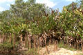
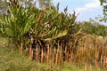
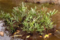
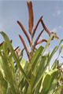
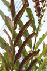
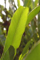
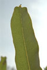
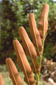
 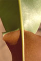
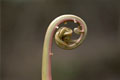
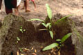
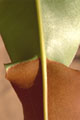
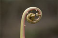
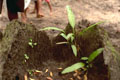
Diagnostic characters
Botany & morphology
Regeneration
Reproductive biology
Ecology
Distribution
Uses
Mangrove fern, terestrial, erect, 1 – 2 m tall. Fronds (leaves of ferns) are pinnate and leathery, sori are found at the extremity of apical pinnae, along the veins.
Fronds once-pinnate; leaflet 8 - 14, alternate, linear-oblong, retusely mucronate at apex, cuneate at base, entire, venation reticulate with uniform elongate areoles diverging from the thickened midrib without free vein endings.
Fertile fronds only on upper leaflet, lowest leaflet always distant, long stalked. Sori densely aggregated along the undersurface, non-indusiate.
Scales broad, restricted at the base of fronds.
Stipes are woody, glabrous, arising from a stout woody rhizome.
Vegetative propagation through rhizhomatus roots; new individuals also develop from spores via gametophytes, especially in disturbed sites.
Germination of spores seems most successful in fresh water. Sex-organ (antheridia and archegonia) ontogeny occurs in sequence so that out crossing is promoted.
It is a strong weedy and aggressive species occurs in back mangroves and associated tidally influenced estuarine. Light-tolerant or even light-demanding species. It can survive without regular tidal inundation.
It is a strong weedy and aggressive species occurs in back mangroves and associated tidally influenced estuarine. Light-tolerant or even light-demanding species. It can survive without regular tidal inundation.
Rhizome is used as medicine for wounds and boils; fronds are used as antidote for snake bite; litter for cattle and roof thatching.
Top of the page